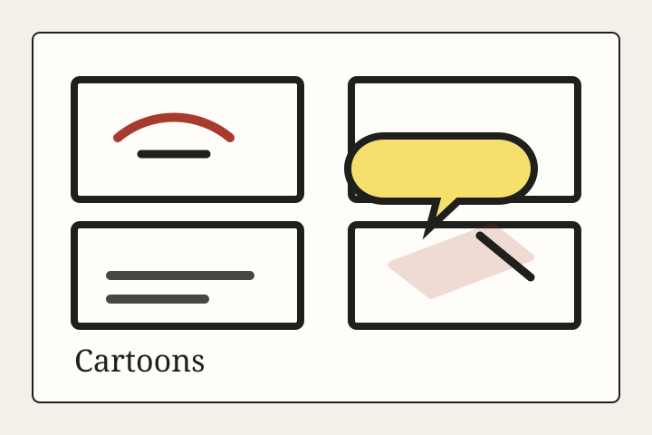
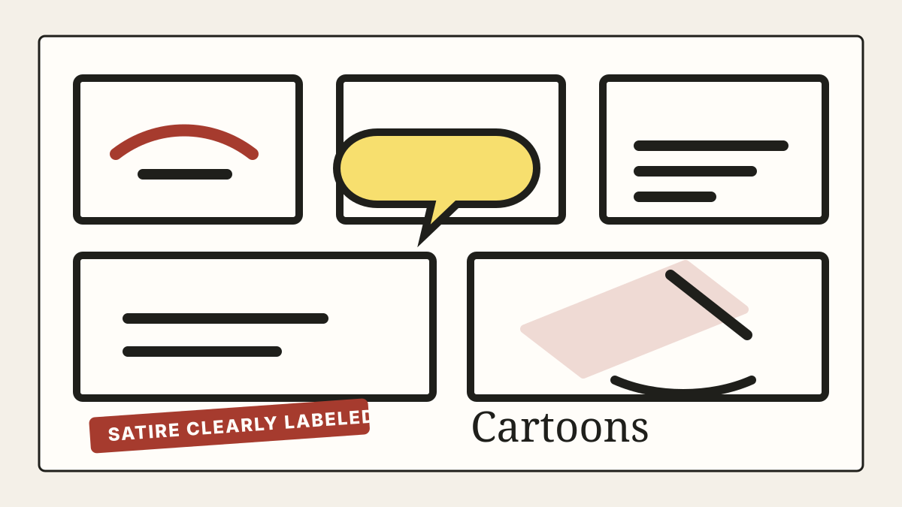

Cartoons • Editorial Cartoon
The Mission Statement Takes the Stand
An editorial cartoon on the Musk-OpenAI trial, where the legal deadline ended the case but the mission-versus-money question kept its seat in the courtroom.
Cartoon Desk
Editorial cartoons, visual satire, and drawn commentary, clearly labeled.

Cartoons • Editorial Cartoon
An editorial cartoon on the Musk-OpenAI trial, where the legal deadline ended the case but the mission-versus-money question kept its seat in the courtroom.

Cartoons • Comic
The first Press comic is about the little performance every app gives when a reader, customer, or exhausted human tries to leave.

Cartoons • Editor's Note
The Press is adding a Cartoon Desk for editorial cartoons, visual satire, and drawn commentary. The rule is simple: make the joke sharp, make the label clear, and never ask readers to mistake invention for reporting.